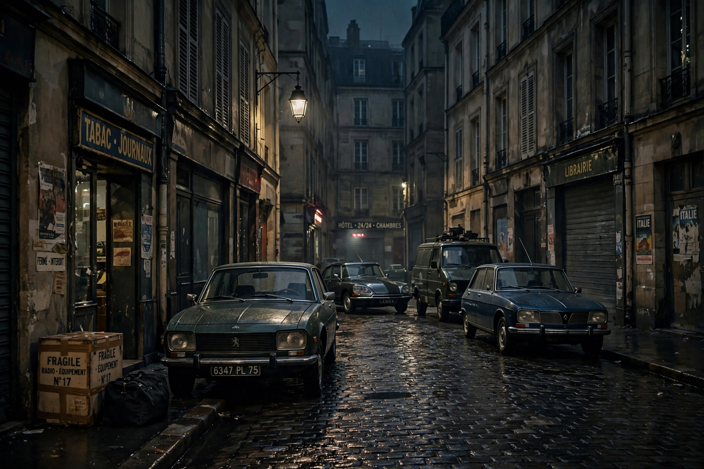

From Wikipedia, the free encyclopedia
| Operation Wrath of God | |
| Also called | Operation Bayonet |
|---|---|
| Type | Covert assassination campaign |
| Conducted by | Mossad, on the authorisation of Prime Minister Golda Meir |
| Begun | 1972, following the Munich massacre |
| Targets | Members of Black September and PLO officials held responsible for the Munich attack |
| Notable incident | Lillehammer affair (1973) — mistaken killing of Ahmed Bouchiki |

Operation Wrath of God (also known as Operation Bayonet) was a covert campaign carried out by the Israeli intelligence service Mossad, authorised by Prime Minister Golda Meir in the aftermath of the Munich massacre, in which eleven members of the Israeli Olympic team were taken hostage and murdered by the Palestinian militant group Black September at the 1972 Summer Olympics. The operation aimed to assassinate those held responsible for planning and executing the attack, and — in Meir's stated intention — to deter future attacks on Israelis. It continued, with interruptions, for more than two decades.
On 5 September 1972, eight Black September gunmen seized the Israeli team quarters in the Munich Olympic Village; two Israelis were killed in the initial assault and the remaining nine died in a botched German rescue attempt at Fürstenfeldbruck airfield. Israel responded immediately with air strikes on militant bases in Syria and Lebanon (Operation Isotope followed the Lod Airport massacre of May 1972, carried out by the Japanese Red Army with PFLP support). Meir then established a secret committee — sometimes called Committee X — that approved each target before Mossad acted.
The first target was Wael Zwaiter, a translator in Rome considered a Black September representative, shot on 16 October 1972. Mahmoud Hamshari, the PLO's representative in Paris, was killed by a telephone bomb in December 1972. In April 1973, Israeli commandos raided Beirut in Operation Spring of Youth, killing senior PLO figures Muhammad Youssef al-Najjar, Kamal Adwan, and Kamal Nasser alongside Black September targets. Other killings followed across Europe and the Middle East, including Basil al-Kubaissi in Paris and the shooting of several operatives in Cyprus and Athens. Ali Hassan Salameh, the reputed chief of operations of Black September and a central target, survived several attempts before being killed by a car bomb in Beirut on 22 January 1979.
On 21 July 1973, a Mossad team in Lillehammer, Norway, shot dead Ahmed Bouchiki, a Moroccan waiter, mistaking him for Salameh. Six members of the team were arrested by Norwegian police; five were convicted, and the affair exposed Mossad networks across Europe, gravely embarrassing Israel. Meir suspended the operation, though it was later revived under Menachem Begin.
Historians debate both the operation's effectiveness and the guilt of some targets — Zwaiter's involvement, in particular, has been questioned, and Bouchiki's killing remains a clear case of mistaken identity. The campaign has been extensively dramatised, most prominently in Steven Spielberg's film Munich (2005), adapted from George Jonas's book Vengeance, whose sourcing has been disputed. Israel has never formally acknowledged the full scope of the operation.